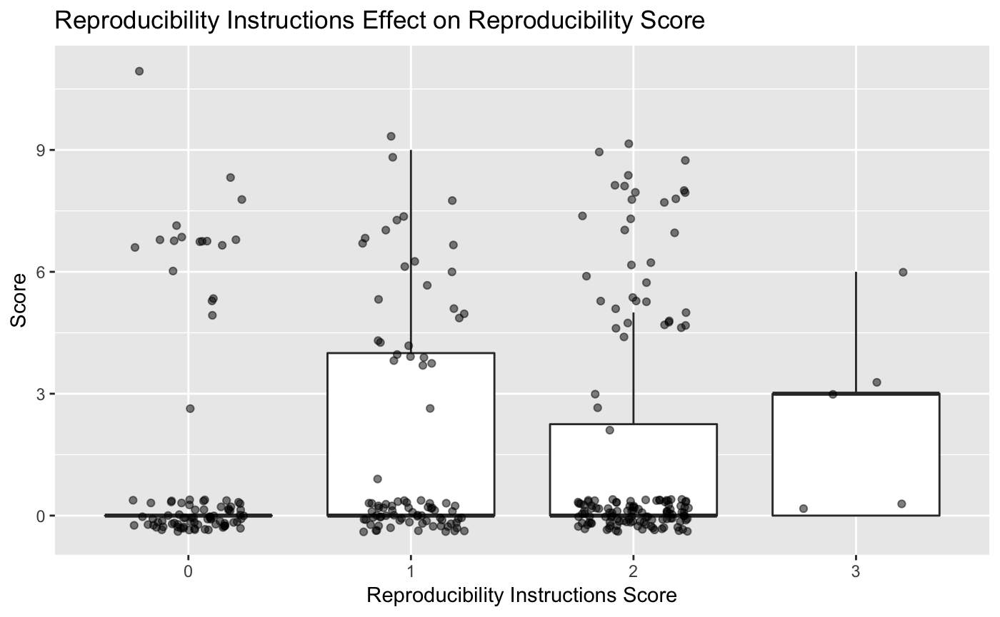

Initial Analysis
Adam H Sparks
2018-06-08
Source:vignettes/initial_analysis.Rmd
initial_analysis.RmdImport article evaluations
rrpp <- gsheet::gsheet2tbl(
"https://docs.google.com/spreadsheets/d/19gXobV4oPZeWZiQJAPNIrmqpfGQtpapXWcSxaXRw1-M/edit#gid=1699540381"
)Calculate reproducibility score
library(dplyr)
#>
#> Attaching package: 'dplyr'
#> The following objects are masked from 'package:stats':
#>
#> filter, lag
#> The following objects are masked from 'package:base':
#>
#> intersect, setdiff, setequal, union
rrpp <-
rrpp %>%
mutate(
reproducibility_score =
if_else(
data_avail > 0,
na.omit(comp_mthds_avail) +
na.omit(software_avail) +
na.omit(software_cite) +
data_avail,
as.integer(data_avail),
as.integer(0)
)
)
#> Warning in na.omit(comp_mthds_avail) + na.omit(software_avail): longer
#> object length is not a multiple of shorter object length
#> Warning in na.omit(comp_mthds_avail) + na.omit(software_avail) +
#> na.omit(software_cite) + : longer object length is not a multiple of
#> shorter object lengthUnnest the software that were used
Create a tidy data frame of the data by unnesting software used as in many cases multiple software packages were used, so will end up with multiple rows for same article, one for each software.
library(magrittr)
library(tidyr)
#>
#> Attaching package: 'tidyr'
#> The following object is masked from 'package:magrittr':
#>
#> extract
rrpp <-
rrpp %>%
unnest(software_used = strsplit(software_used, ", "))Visualise evaluations
Article classes
library(ggplot2)
ggplot(rrpp, aes(x = art_class)) +
geom_bar(stat = "count") +
xlab("Class(es)") +
theme(axis.text.x = element_text(angle = 45, hjust = 1)) +
ggtitle("Article Classification")
Computational methods available
ggplot(rrpp, aes(x = comp_mthds_avail)) +
geom_bar() +
ggtitle("Computational Methods Availability") +
xlab("Score")
#> Warning: Removed 8 rows containing non-finite values (stat_count).
Software availability
Was the software used readily available and preferably open-source?
ggplot(rrpp, aes(x = software_avail)) +
geom_bar() +
ggtitle("Software Availablity") +
xlab("Score")
#> Warning: Removed 3 rows containing non-finite values (stat_count).
Data availability
Was the data made available?
ggplot(rrpp, aes(x = data_avail)) +
geom_bar() +
ggtitle("Data Availability") +
xlab("Score")
#> Warning: Removed 1 rows containing non-finite values (stat_count).
Software citations
Was the software that was used properly cited?
ggplot(rrpp, aes(x = software_cite)) +
geom_bar() +
ggtitle("Software Cited") +
xlab("Score")
#> Warning: Removed 3 rows containing non-finite values (stat_count).
Software used (cited)
Count and sort top 10 software packages cited. There are likely others that are used, but they have not been properly identified by the authors.
tab <- table(rrpp$software_used)
tab_s <- sort(tab)
top10 <- tail(names(tab_s), 17) # checking the table, there are several ties
top_software <- subset(rrpp, software_used %in% top10)
top_software$software_used <- factor(top_software$software_used,
levels = rev(top10))
ggplot(top_software, aes(x = software_used)) +
geom_bar() +
ggtitle("Top 10 Software Used") +
xlab("Software") +
ylab("Count") +
theme(axis.text.x = element_text(angle = 45, hjust = 1))
Reproducibility score
The reproducibility score was calculated as the sum of the scores for computational method availability,
ggplot(rrpp, aes(x = reproducibility_score)) +
geom_bar() +
ggtitle("Combined Reproducibility Score") +
xlab("Score")
Article class effect on reproducibility score
ggplot(rrpp, aes(y = reproducibility_score,
x = art_class)) +
geom_boxplot(outlier.shape = NA) +
geom_jitter(width = 0.25, alpha = 0.5) +
ggtitle("Article Class Effect on Reproducibility") +
xlab("Class(es)") +
ylab("Score") +
theme(axis.text.x = element_text(angle = 45, hjust = 1))
Journal effect on reproducibility score
ggplot(rrpp, aes(y = reproducibility_score,
x = abbreviation)) +
geom_boxplot(outlier.shape = NA) +
geom_jitter(width = 0.25, alpha = 0.5) +
ggtitle("Journal Effect on Reproducibility") +
xlab("Journal") +
ylab("Score") +
theme(axis.text.x = element_text(angle = 90, hjust = 1))
Evaluator effect on reproducibility score
ggplot(rrpp, aes(y = reproducibility_score,
x = assignee)) +
geom_boxplot(outlier.shape = NA) +
geom_jitter(width = 0.25, alpha = 0.5) +
ggtitle("Evaluator Effect on Reproducibility Score") +
xlab("Evaluator") +
ylab("Score")
Five year impact factor effect on reproducibility score
ggplot(rrpp, aes(y = reproducibility_score,
x = as.factor(round(IF_5year, 1)))) +
geom_boxplot(outlier.shape = NA) +
ggtitle("Five Year IF Effect on Reproducibility Score") +
xlab("Impact Factor") +
ylab("Score")
Journal open access effect on reproducibility score
ggplot(rrpp, aes(y = reproducibility_score,
x = open)) +
geom_boxplot(outlier.shape = NA) +
geom_jitter(width = 0.25, alpha = 0.5) +
ggtitle("Open Access Effect on Reproducibility Score") +
xlab("Impact Factor") +
ylab("Score")
Journal reproducibility instructions effect on reproducibility score
ggplot(rrpp, aes(y = reproducibility_score,
x = as.factor(repro_inst))) +
geom_boxplot(outlier.shape = NA) +
geom_jitter(width = 0.25, alpha = 0.5) +
ggtitle("Reproducibility Instructions Effect on Reproducibility Score") +
xlab("Reproducibility Instructions Score") +
ylab("Score")